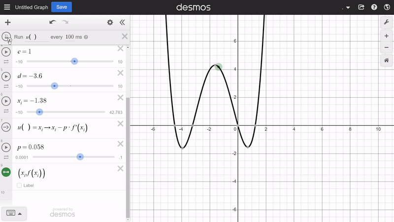
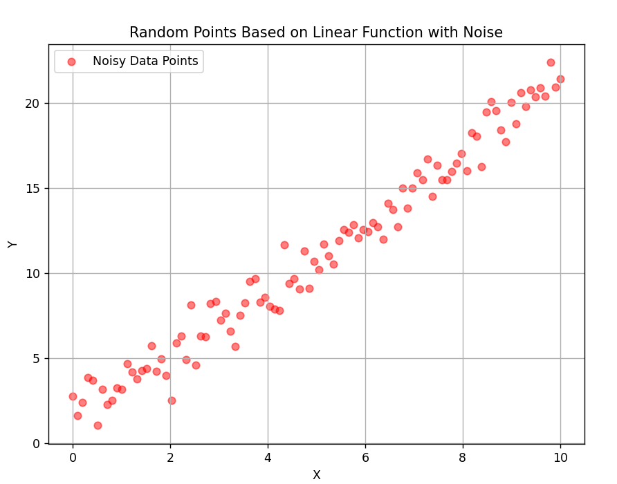

Fully connected neural networks
I'll be talking about creating a fully connected neural network from scratch in Python with just numpy. The neural network will be for digit images classification, which is a classic introduction to fully connected neural networks. This is the first ever neural network project that I made and I managed to do it mostly due to the help of 3Blue1Brown. The only knowledge about math I had was Algebra and just a bit of differential calculus and Linear Algebra. Like seriously surface level stuff that I learned from 3Blue1Brown's essence of calculus and essence of linear algebra series'. There is going to be vector calculus in here and I have not even learned about that when I made this project. It took me a whole week or two to rediscover and make myself used to vector calculus chain rule and stuff like that. It was really hard for me to think about it, but I managed to persevere anyway and I managed to finish the project. I finished this project months ago so I don't remember how I made it so this is gonna be a good review and exercise on neural networks for me.Image classification, and any kind of computer vision applications, is better to be implemented with convolutional neural networks. We won't be using that here because I still don't know how to implement a good differentiation interface with convolutional neural networks. I failed miserably last time I tried.
Calculus optimization
A concept that will be reviewed here is the basics of calculus optimization. Calculus optimization is a tool in calculus to find optima points of functions. For example, we might have a quadratic function in the form $f(x) = ax^2 + bx + c$ and you might want to find the minima/maxima of the function. It's clear intuitively that the maxima/minima will always have a derivative of 0. Therefore, another way to rephrase this problem is to find an x value such that the derivative of $f(x)$ at that x value is equal to 0. The derivative of the quadratic function is $2ax + b$, we want that to be 0, you can solve for x and get $x = \frac{-b}{2a}$.This concept also generalizes to higher dimensions. If you have a multivariable function such as $f(x, y)$ and you want to find an optima point, it is the same as trying to find values of $x$ and $y$ such that the gradient vector at that point is zero (the identity vector). Generally, if you have a function $f(\vec{v})$ that takes in a vector and returns a single real number, finding an optima point is the same as finding an input vector $\vec{v}$ such that the gradient vector at that point is zero. Which implies the directional derivative in every direction is also zero.
For example, take the function $f(x, y) = (x - 3)^2 + (y - 5)^2$. It's clear to us that the minima of this function is at $(3, 5)$. But using calculus, you can find the minima more systematically by solving the system of equation: $$ \begin{align*} \frac{\partial f}{\partial x} &= 2(x - 3) = 0 \\ \frac{\partial f}{\partial y} &= 2(y - 5) = 0 \end{align*} $$ and it is clear that the solution is $x = 3$ and $y = 5$.
Gradient descent
There is also another very useful tool in Calculus Optimization, which is gradient descent. The calculus optimization that we did earlier was all done by solving an algebraic equation. What if you want to minimize/maximize a function, but it's a function where it's derivative in terms of each variables equated to 0 and then solved for the variable is really hard or impossible to solve using algebra? That's where gradient descent comes in. Gradient descent is an iterative optimization algorithm. That means you don't immediately get the optima, but it attempts to slowly get closer and closer to it. What it exactly tries to do is that it tries to find the closest optima. You have to configure a starting point in the algorithm and then it tries to find the closest optima, which makes it very limited in addition to other things. Therefore this algorithm is extremely far from perfect, but it's also extremely useful enough for our purposes.As the name suggests, it uses the gradient vector of the function to find where it moves next. Here's how it works if you want to minimize the function $f(\vec{v})$: you start with a certain value for $\vec{v}$, which is going to be the initial starting point. On every step, you get the gradient vector of the function at the current $\vec{v}$. A way to interpret this gradient vector is that for each element in the gradient vector, let's say the $k$th, if it is positive, then increasing the $k$th value of $\vec{v}$ also increases the output of the function. In other words, the function is increasing in terms of (or in the direction of) the $k$th element of the input vector. If the $k$th element in the gradient vector is negative, then increasing the $k$th value of $\vec{v}$ decreases the output of the function. In other words, the function is decreasing in terms of (or in the direction of) the $k$th element of the input vector. And then an extension to that interpretation is that the "speed" at which the function increases/decreases at that point is proportional to the exact value of the $k$th element of the gradient vector at $\vec{v}$. Or if you already know that gradients point to the direction of steepest ascent, you would know that the negative of it would point in the direction of steepest descent, so that's another much simpler way of thinking about it.
Since the task is to minimize the function, we want to iteratively change $\vec{v}$ such that the result decreases by using this gradient vector. Since a positive gradient vector element means it's increasing as the input increases, you want to decrease the input when the gradient is positive. With the same logic for when the gradient vector element is negative, you'd want to increase the input in that case. Since the negative of positive is negative, and the negative of negative is positive, you can simply substract $\vec{v}$ by the gradient vector and that will automatically do exactly what was described. In other words, on every iteration, we update $\vec{v}$ in this way: $$\vec{v}_{i + 1} = \vec{v}_i - c \cdot \nabla f(\vec{v}_i)$$ where c is some proportionality constant.
You might notice that that would mean, as the function increases faster, we actually go further in the opposite direction. Which may or may not be reasonable. You can imagine a function that's increasing a LOT but only for a very short time. In that case, you would imagine that a reasonably sized $c$ would still make this process overshoot, in other words it might move way too far. That is definitely a possible issue that can theoretically be solved if $c$ is really small, but picking a small $c$ would also make things way slower. That's why this algorithm is really far from perfect, but it works for our purposes later. Also here's a simple visualization of 2D gradient descent, you can also see the formulas on the left side: 
Another performance trick that is used in this algorithm is something called Stochastic Gradient Descent. When doing an optimization problem with gradient descent, there may be a lot of variables you may change in order to optimize the functions. For example, if you have a multivariable function $f(\vec{v})$ where $\vec{v}$ is a 10-thousand dimensional vector. In that case, there is a trick that you can use to make the process a bit more efficient. The way you would think about this trick is that you're essentially splitting the parameter of the function into multiple smaller vectors, such as: $f(\vec{v_1}, ..., \vec{v_{10}})$ where each of the vectors have 1000 elements. After that, you might imagine that instead of getting the gradient in terms of every input vector, you only get the gradient in terms of one of them, and then do a single gradient descent iteration on that element. After that, you move on to the next input parameter vector. One iteration in this case is counted as having done this to every single parameter vector. In other words, in every iteration, if you generally have the function $f(\vec{v_1}, ..., \vec{v_n})$, and you denote $v_1, ..., v_n$ to be the current position on the gradient descent process, in each iteration, you would be doing: $$v_i = v_i - p \cdot \nabla_{v_i} f(v_1, ..., v_n)$$ for every $i \in \{1, 2, ..., n\}$ Here's a way of intuitively thinking about what this does in 3-dimensions. Imagine you have a bowl function, maybe $f(x, y) = x^2 + y^2$, that has a minima at (0, 0). What we're doing is Stochastic Gradient Descent on this function where we split the input vector with 2 elements into 2 vectors with 1 element each. So visually, if you start from a point near $(0, 0)$, normal gradient descent would move the point in the direction of the minima. While in stochastic gradient descent, it would move a bit more weirdly, so it would first move in the x-axis such that it decreases the output, and then the y-axis such that it decreases the output and then all of that repeats. I'll give an animation later.
There are also further improvements to this algorithm. Imagine that we're on a point that is neither a maxima nor a minima, but is relatively kind of flat. So the derivative in every direction at that point is relatively low, even though it's absolutely neither a maxima nor a minima and there is actually a maxima/minima waiting for us near that point. Then this algorithm would move extremely slowly near that relatively flat point. It is also possible for it to get completely stuck at such a point if it's so flat that the gradient at it is zero. That's where "momentum-based" gradient descent comes in. If you had to describe it, it's basically gradient descent but with acceleration. If you've been going down at a steady rate, and you suddenly see a relatively flat point, you don't immediately stop but you should still move as in how physics would work in real life. This helps a LOT in these cases for gradient descent. So it helps an issue that might be described as undershooting but it still doesn't help with the other problem of overshooting. There's not much that's actually done about that. We'll talk about the details of this later on. Here's an awesome demonstration of it in action though:

Regression
The next concept that will be talked about here is regression. First, we will talk about Linear Regression, then Logistic Regression, and then finally regression in a more general sense. Linear Regression is a task of finding the best linear function that fits a given data. In 2-diensional linear regression, the task would be to find the best function linear function $f(x)$, where x is a single number, to best fit the array of inputs $x_i$ and expected outputs $y_i$. Since $f(x)$ must be linear, then it's form is $f(x) = mx + c$. Every linear function with one input and one output can be given in that form. If you still remember Algebra, you should notice that that is the equation for a line. Therefore, if you visualize that, you will get a line with a slope of $m$ and intercept (where it hits the y-axis) $c$.Here's an example of Linear Regression. Suppose you have all of these points in the image below 
in which there are 100 points in the image. Each of the point has an x and y coordinate value. The first point is $(x_1, y_1)$, the second point $(x_2, y_2)$, and the $i$th point in general is $(x_i, y_i)$. These are called the data points. The task is to create a linear function $f(x)$ that "best fits the data points." There are two ways to interpret this. The first time I found out about linear regression, I was thinking of finding a line (or a hyperplane in higher dimensions) that best fits the data points. In that case, it feels more reasonable to define a line that best fits the data points to be a line such that the sum of orthogonal distances from the line to each of the data points is as low as possible. But that is not what we're trying to do. We want to find a function that best fits the data points, not a line that visually fits them the best. In that case, what we want intuitively is for the sum of the absolute difference of $f$ evaluated at each of the point's $x$ value with the expected $y$ value to be as small as possible. In other words, intuitively, we might want to minimize: $$ \sum_{i=1}^{N} |f(x_i) - y_i| $$ where $N$ is the amount of data points. The issue with this intuitive interpretation is that it uses the absolute function, which is not nice to work with when working with derivatives. So you can instead use the square function. So then you would be minimizing this instead: $$ \sum_{i=1}^{N} (f(x_i) - y_i)^2 $$ This will change the behaviour of it a bit, there is a chance that doing this will give a different result compared to the previous abs method. The reason for that is this penalizes bigger differences more than smaller differences. But other than that it works pretty well anyway, so we'll be using that. When we say minimize, we're actually minimizing it in terms of the parameters of $f$ that intuitively controls how the line looks. Therefore, we actually have to change the way $f$ is written into $f(x, m, c)$ and now describe more explicitly that we're minimizing the sum from above in terms of $m$ and $c$. Just like what we've talked about in the optimization section earlier, you can do this by solving the system of equations: $$ \begin{align*} \frac{d}{dm} \left[\sum_{i=1}^{N} (f(x_i, m, c) - y_i)^2\right] &= \frac{d}{dm} \left[\sum_{i=1}^{N} (mx_i + c - y_i)^2\right] \\ &= \sum_{i=1}^{N} 2x_i(mx_i + c - y_i) \\ &= 0 \\ \frac{d}{dc} \left[\sum_{i=1}^{N} (f(x_i, m, c) - y_i)^2\right] &= \frac{d}{dc} \left[\sum_{i=1}^{N} (mx_i + c - y_i)^2\right] \\ &= \sum_{i=1}^{N} 2(mx_i + c - y_i) \\ &= 0 \end{align*} $$ for m and c. Here's the simple solution: $$ \begin{align*} \sum_{i=1}^{N} 2x_i(mx_i + c - y_i) &= 0 \\ \sum_{i=1}^{N} x_i(mx_i + c - y_i) &= 0 \\ \sum_{i=1}^{N} mx_i^2 + x_i(c - y_i) &= 0 \\ m\left(\sum_{i=1}^{N} x_i^2\right) + \sum_{i=1}^{N} x_i(c - y_i) &= 0 \\ m &= -\frac{\sum_{i=1}^{N} x_i(c - y_i)}{\sum_{i=1}^{N} x_i^2} \\ &= \frac{\sum_{i=1}^{N} x_i(y_i - c)}{\sum_{i=1}^{N} x_i^2} \\ \end{align*} $$ and then for $c$: $$ \begin{align*} \sum_{i=1}^{N} 2(mx_i + c - y_i) &= 0 \\ \sum_{i=1}^{N} c + mx_i - y_i &= 0 \\ Nc + \sum_{i=1}^{N} mx_i - y_i &= 0 \\ c &= -\frac{\sum_{i=1}^{N} mx_i - y_i}{N} \\ &= \frac{\sum_{i=1}^{N} y_i - mx_i}{N} \\ \end{align*} $$ Putting $c$ into m: \begin{align*} m & =\frac{\sum _{i=1}^{N} x_{i} (y_{i} -c)}{\sum _{i=1}^{N} x_{i}^{2}}\\ & =\frac{\sum _{i=1}^{N} x_{i} (y_{i} -\frac{\sum _{j=1}^{N} y_{j} -mx_{j}}{N} )}{\sum _{i=1}^{N} x_{i}^{2}}\\ & =\frac{\sum _{i=1}^{N} x_{i} (\frac{Ny_{i} -\sum _{j=1}^{N} y_{j} -mx_{j}}{N} )}{\sum _{i=1}^{N} x_{i}^{2}}\\ & =\frac{\sum _{i=1}^{N}\left( Nx_{i} y_{i} -x_{i}\left(\sum _{j=1}^{N} y_{j} -mx_{j}\right)\right)}{N\sum _{i=1}^{N} x_{i}^{2}}\\ & =\frac{\sum _{i=1}^{N}\left( Nx_{i} y_{i} -\left(\sum _{j=1}^{N} x_{i} y_{j}\right) + mx_{i}\left(\sum _{j=1}^{N} x_{j}\right)\right)}{N\sum _{i=1}^{N} x_{i}^{2}}\\ & =\frac{\sum _{i=1}^{N}\left( Nx_{i} y_{i} -\left(\sum _{j=1}^{N} x_{i} y_{j}\right)\right) + m\left(\sum _{i=1}^{N}\sum _{j=1}^{N} x_{i} x_{j}\right)}{N\sum _{i=1}^{N} x_{i}^{2}}\\ m\left( 1-\frac{\sum _{i=1}^{N}\sum _{j=1}^{N} x_{i} x_{j}}{N\sum _{i=1}^{N} x_{i}^{2}}\right) & =\frac{\sum _{i=1}^{N}\left( Nx_{i} y_{i} -\left(\sum _{j=1}^{N} x_{i} y_{j}\right)\right)}{N\sum _{i=1}^{N} x_{i}^{2}}\\ m\left(\frac{N\left(\sum _{i=1}^{N} x_{i}^{2}\right) -\left(\sum _{i=1}^{N}\sum _{j=1}^{N} x_{i} x_{j}\right)}{N\sum _{i=1}^{N} x_{i}^{2}}\right) & =\frac{\sum _{i=1}^{N} x_{i}\left( Ny_{i} -\left(\sum _{j=1}^{N} y_{j}\right)\right)}{N\sum _{i=1}^{N} x_{i}^{2}}\\ m\left( N\left(\sum _{i=1}^{N} x_{i}^{2}\right) -\left(\sum _{i=1}^{N}\sum _{j=1}^{N} x_{i} x_{j}\right)\right) & =\sum _{i=1}^{N} x_{i}\left( N y_{i} -\left(\sum _{j=1}^{N} y_{j}\right)\right)\\ m\left( \sum _{i=1}^{N}\left( Nx_{i}^{2} -\sum _{j=1}^{N} x_{i} x_{j}\right)\right) & =\sum _{i=1}^{N} x_{i}\left( Ny_{i} -\left(\sum _{j=1}^{N} y_{j}\right)\right)\\ m & =\frac{\sum _{i=1}^{N} x_{i}\left( Ny_{i} -\left(\sum _{j=1}^{N} y_{j}\right)\right)}{\sum _{i=1}^{N}\left( Nx_{i}^{2} -\sum _{j=1}^{N} x_{i} x_{j}\right)}\\ m & =\frac{\sum _{i=1}^{N} x_{i}\left( Ny_{i} -\left(\sum _{j=1}^{N} y_{j}\right)\right)}{\sum _{i=1}^{N} x_{i}\left( Nx_{i} -\sum _{j=1}^{N} x_{j}\right)} \end{align*} ...you get how it is, man. I am too lazy to continue this right now and it's just gonna bloat the page anyway.
Again, this is just annoying algebra that anyone can do but just really long and annoying to do. You don't really need to pay attention to how it was derived, just the result because you should be able to do enough algebra to find this yourself with enough patience. And so using that formula, you can do 2-dimensional linear regression. Here's a demo link in desmos. Now for higher dimensional linear regression. This is only kind of pointless and will just bloat this article because it's more straightforward algebra but I'm legitimately curious about it at the moement, lol. If you could follow what happened earlier I'm sure you can do this yourself, maybe try doing it yourself as an exercise. I'm still gonna do it here, though. You should atleast read the higher-dimensional reformulation of the task to get an idea of it.
The task is to find the linear function $f(\vec{v})$ that best fits the list of data denoted $x_i$ and $y_i$. The difference here is that each $x_i$ will be a vector instead of a single real number while each $y_i$ is still a real number. Every multivariable linear function is in the form: $$f(\vec{v}) = w^Tv + b$$ where $w$ is a vector with the same dimension as $v$ which is analogous to the slope in the one-dimensional case and $b$ is a single real number. Therefore the optimization task is to minimize: $$ \begin{align*} \sum_{i=1}^{N} &= (f(x_i) - y_i)^2 \\ &= (w^Tx_i + b - y_i)^2 \end{align*} $$ where N is the amount of input data. Denote $x_{j,i}$ to be the $i$th vector's $j$th element, and so $x$ is a matrix that represents all of the input data. Now the problem can be reformulated with matrix-vector